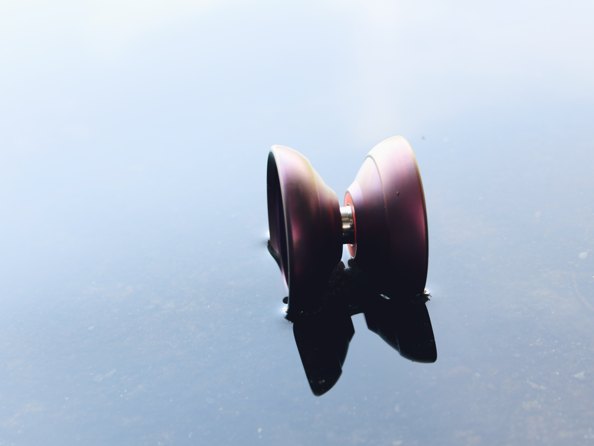
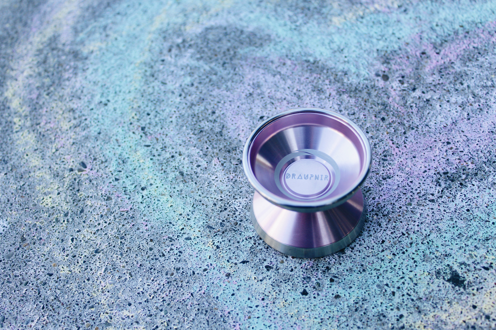

About Self-Expression Through Yo-Yo
This page was created to help share and foster an appreciation for yo-yo as an art form. Yo-Yos are beautiful tools used for an amazing performance art, and offer a unique way to express ideas and emotions. Thanks for taking a look!
 